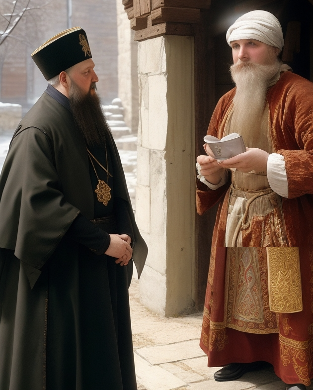
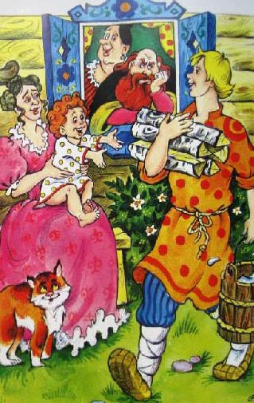
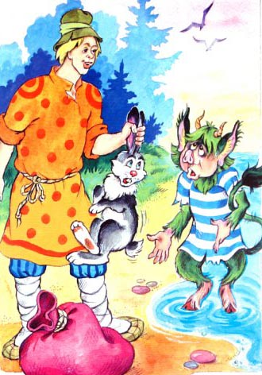
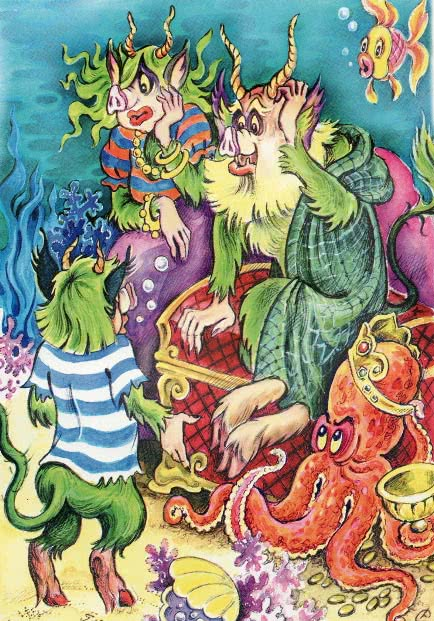
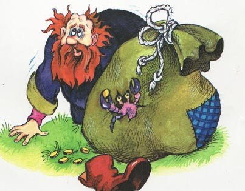

Сказка о попе и работнике его Балде
Александр Пушкин
Жил-был поп,
Толоконный лоб.
Пошёл поп по базару
Посмотреть кой-какого товару.
Навстречу ему Балда
Идёт, сам не зная куда.
“Что, батька, так рано поднялся?
Чего ты взыскался?”
Поп ему в ответ: “Нужен мне работник:
Повар, конюх и плотник.
А где найти мне такого
Служителя не слишком дорогого?”
Балда говорит: “Буду служить тебе славно,
Усердно и очень исправно,
В год за три щелка тебе по лбу.
Есть же мне давай варёную полбу”.
Призадумался поп,
Стал себе почёсывать лоб.
Щёлк щелку ведь розь.
Да понадеялся он на русский авось.
Поп говорит Балде: “Ладно.
Не будет нам обоим накладно.
Поживи-ка на моём подворье,
Окажи своё усердие и проворье”.
Живёт Балда в поповом доме,
Спит себе на соломе,
Ест за четверых,
Работает за семерых;
Досветла всё у него пляшет,
Лошадь запряжёт, полосу вспашет.
Печь затопит, всё заготовит, закупит,
Яичко испечёт да сам и облупит.
Попадья Балдой не нахвалится,
Поповна о Балде лишь и печалится,
Попёнок зовёт его тятей;
Кашу заварит, нянчится с дитятей.

Только поп один Балду не любит,
Никогда его не приголубит,
О расплате думает частенько;
Время идёт, и срок уж близенько.
Поп ни ест, ни пьёт, ночи не спит:
Лоб у него заранее трещит.
Вот он попадье признаётся:
“Так и так: что делать остаётся?”
Ум у бабы догадлив,
На всякие хитрости повадлив.
Попадья говорит: “Знаю средство,
Как удалить от нас такое бедство:
Закажи Балде службу, чтоб стало ему невмочь,
А требуй, чтоб он её исполнил точь-в-точь.
Тем ты и лоб от расправы избавишь
И Балду - то без расплаты отправишь”.
Стало на сердце попа веселее.
Начал он глядеть на Балду посмелее.
Вот он кричит: “Поди-ка сюда,
Верный мой работник Балда.
Слушай: платить обязались черти
Мне оброк по самой моей смерти;
Лучшего не надобно дохода,
Да есть на них недоимки за три года.
Как наешься ты своей полбы,
Собери-ка с чертей оброк мне полный”.
Балда, с попом понапрасну не споря,
Пошёл, сел у берега моря;
Там он стал верёвку крутить
Да конец её в море мочить.
Вот из моря вылез старый Бес:
“Зачем ты, Балда, к нам залез?” -
“Да вот верёвкой хочу море морщить
Да вас, проклятое племя, корчить”.
Беса старого взяла тут унылость.
“Скажи, за что такая немилость?” -
“Как за что? Вы не платите оброка,
Не помните положенного срока;
Вот ужо будет нам потеха,
Вам, собакам, великая помеха”.-
“Балдушка, погоди ты морщить море,
Оброк сполна ты получишь вскоре.
Погоди, вышлю к тебе внука”.
Балда мыслит: “Этого провести не штука!”
Вынырнул подосланный бесёнок,
Замяукал он, как голодный котёнок:
“Здравствуй, Балда мужичок;
Какой тебе надобен оброк?
Об оброке век мы не слыхали,
Не было чертям такой печали.
Ну, так и быть - возьми, да с уговору,
С общего нашего приговору -
Чтобы впредь не было никому горя:
Кто скорее из нас обежит около моря,
Тот и бери себе полный оброк,
Между тем там приготовят мешок”.
Засмеялся Балда лукаво:
“Что ты это выдумал, право?
Где тебе тягаться со мною,
Со мною, с самим Балдою?
Экого послали супостата!
Подожди-ка моего меньшого брата”.
Пошёл Балда в ближний лесок,
Поймал двух зайков, да в мешок.
К морю опять он приходит,
У моря бесёнка находит.
Держит Балда за уши одного зайку:
“Попляши-тка ты под нашу балалайку;
Ты, бесёнок, ещё молоденек,
Со мною тягаться слабенек;
Это было б лишь времени трата.
Обгони-ка сперва моего брата.
Раз, два, три! догоняй-ка”.
Пустились бесёнок и зайка:
Бесёнок по берегу морскому,
А зайка в лесок до дому.
Вот, море кругом обежавши,
Высунув язык, мордку поднявши,
Прибежал бесёнок, задыхаясь,
Весь мокрёшенек, лапкой утираясь,
Мысля: дело с Балдою сладит.

Глядь - а Балда братца гладит,
Приговаривая: “Братец мой любимый,
Устал, бедняжка! отдохни, родимый”.
Бесёнок оторопел,
Хвостик поджал, совсем присмирел,
На братца поглядывает боком.
“Погоди, - говорит, - схожу за оброком”.
Пошёл к деду, говорит: “Беда!
Обогнал меня меньшой Балда!”
Старый Бес стал тут думать думу.

А Балда наделал такого шуму,
Что всё море смутилось
И волнами так и расходилось.
Вылез бесёнок: “Полно, мужичок,
Вышлем тебе весь оброк -
Только слушай. Видишь ты палку эту?
Выбери себе любую мету.
Кто далее палку бросит,
Тот пускай и оброк уносит.
Что ж? боишься вывихнуть ручки?
Чего ты ждешь?” - “Да жду вон этой тучки;
Зашвырну туда твою палку,
Да и начну с вами, чертями, свалку”.
Испугался бесёнок да к деду,
Рассказывать про Балдову победу,
А Балда над морем опять шумит
Да чертям верёвкой грозит.
Вылез опять бесёнок: “Что ты хлопочешь?
Будет тебе оброк, коли захочешь...” -
“Нет, - говорит Балда, -
Теперь моя череда,
Условия сам назначу,
Задам тебе, вражонок, задачу.
Посмотрим, какова у тебя сила.
Видишь, там сивая кобыла?
Кобылу подыми-ка ты
Да неси её полверсты;
Снесёшь кобылу, оброк уж твой;
Не снесёшь кобылы, ан будет он мой”.
Бедненький бес
Под кобылу подлез,
Понатужился,
Поднапружился,
Приподнял кобылу, два шага шагнул,
На третьем упал, ножки протянул.
А Балда ему: “Глупый ты бес,
Куда ж ты за нами полез?
И руками-то снести не смог,
А я, смотри, снесу промеж ног”.
Сел Балда на кобылку верхом
Да версту проскакал, так что пыль столбом.
Испугался бесёнок и к деду
Пошёл рассказывать про такую победу.
Черти стали в кружок,
Делать нечего - черти собрали оброк
Да на Балду взвалили мешок.
Идёт Балда, покрякивает,
А поп, завидя Балду, вскакивает,
За попадью прячется,
Со страху корячится.
Балда его тут отыскал,
Отдал оброк, платы требовать стал.
Бедный поп
Подставил лоб:
С первого щелка
Прыгнул поп до потолка;
Со второго щелка
Лишился поп языка;
А с третьего щелка
Вышибло ум у старика.
А Балда приговаривал с укоризной:
“Не гонялся бы ты, поп, за дешевизной”.
